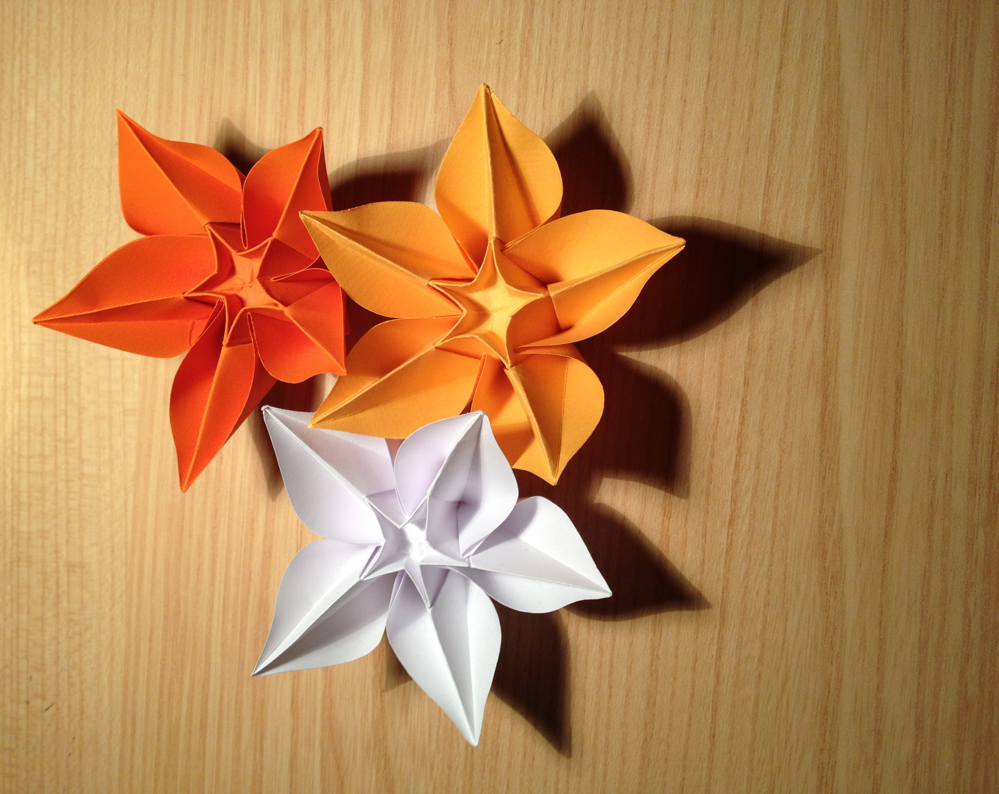
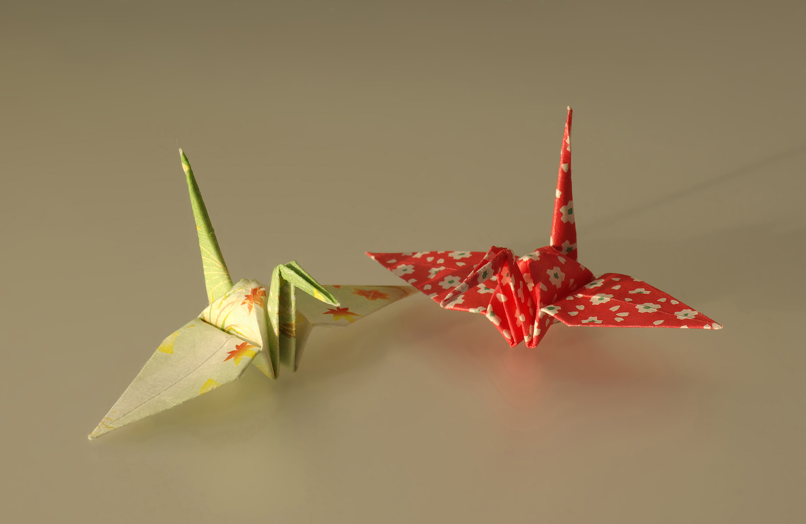
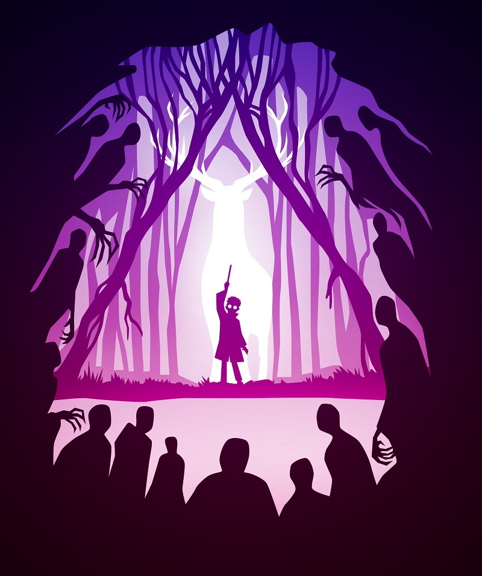
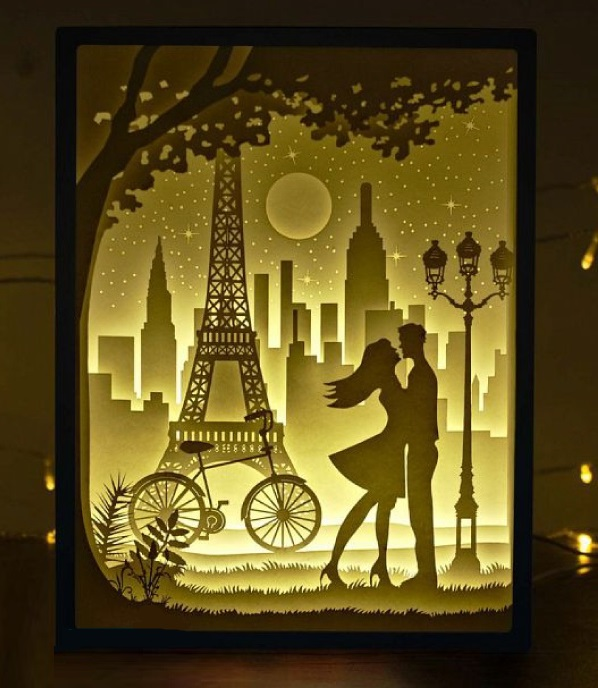
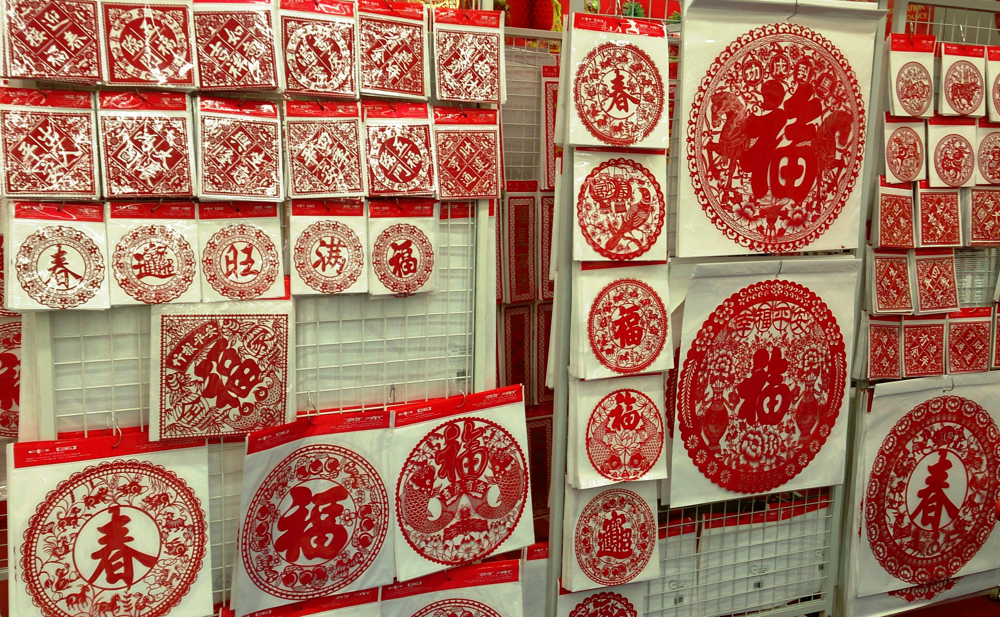

剪纸
春节窗花
节庆装饰中最常见的团花样式，讲究对称、饱满与迎春纳福的寓意。
从节庆窗花到立体折形，再到层叠纸景，
在不同题材与工艺里观看纸艺的纹理、节奏与寓意。
节庆装饰中最常见的团花样式，讲究对称、饱满与迎春纳福的寓意。

人物与戏曲题材常通过整幅长卷或对幅呈现，更强调线条组织、叙事关系与陈设效果。

以折线和转折面组织空间，让平面纸张产生立体节奏与几何秩序。

多瓣单元组合成花束结构，能够更直观地展示折纸如何从单体过渡到重复构成。

双鹤并置更容易看见翼展、颈部与尾部折痕的差异，是观察经典鹤形结构的好例子。

这张作品把人物、鹿形光源、树林和围观者剪影分成多层，形成明显的戏剧舞台感，也很能体现叙事型纸雕的层次组织方式。

埃菲尔铁塔、城市天际线、自行车和恋人剪影共同构成了典型的纸雕灯箱场景，背光让前后图层的深浅关系变得非常清楚。

成组陈列更能看出春字、福字与团花在民俗场景中的使用方式，而不只是单张纹样的局部特写。